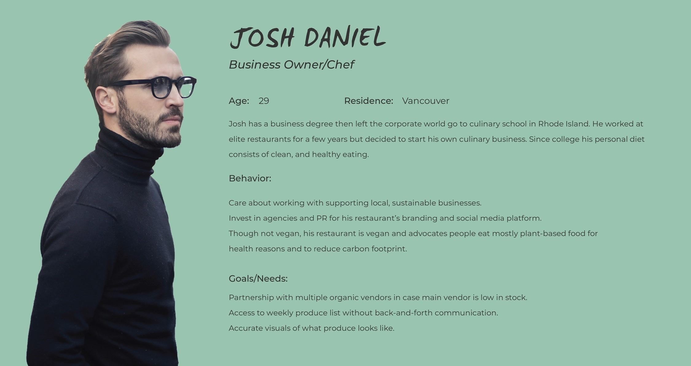
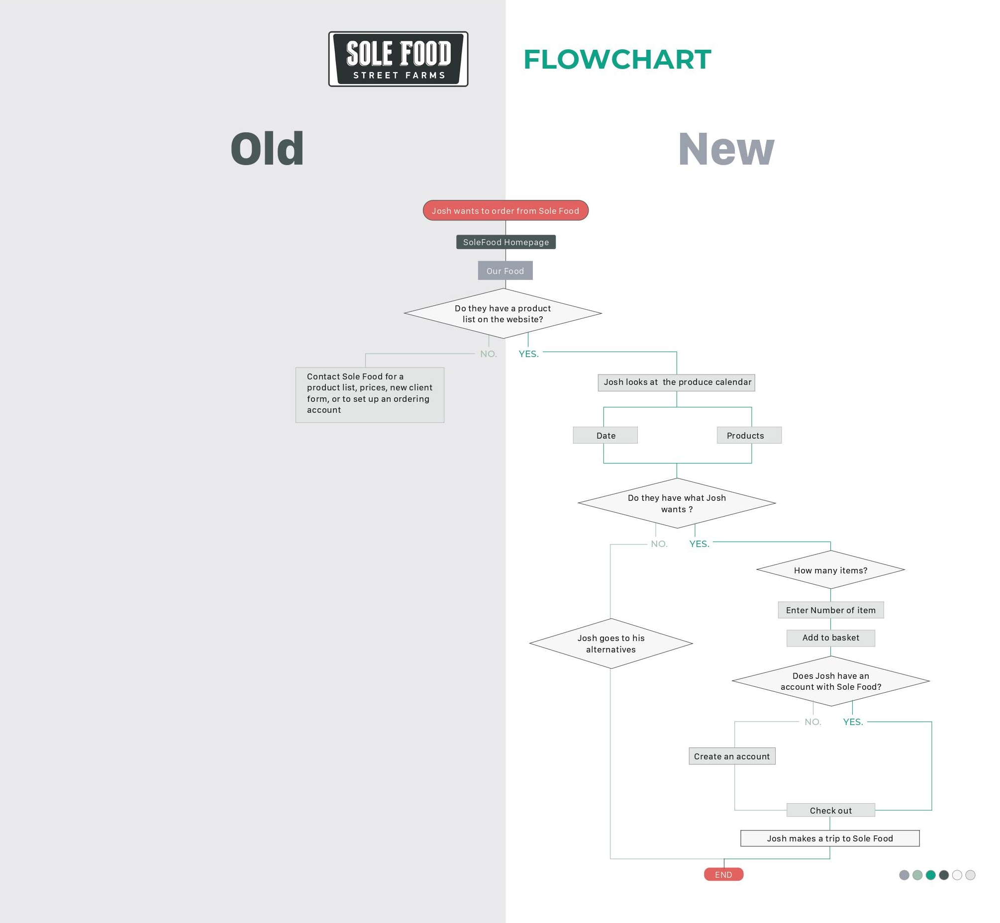
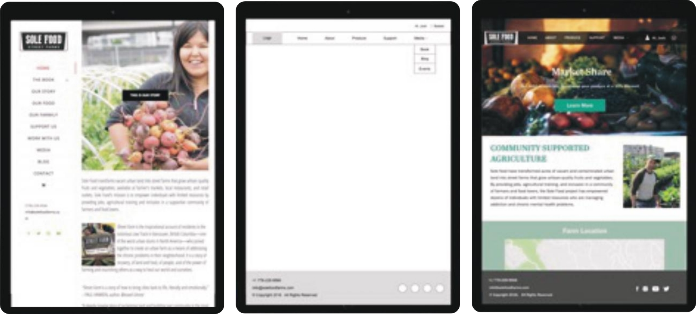
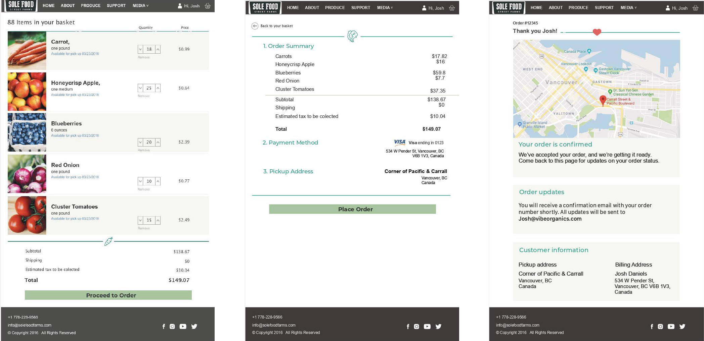
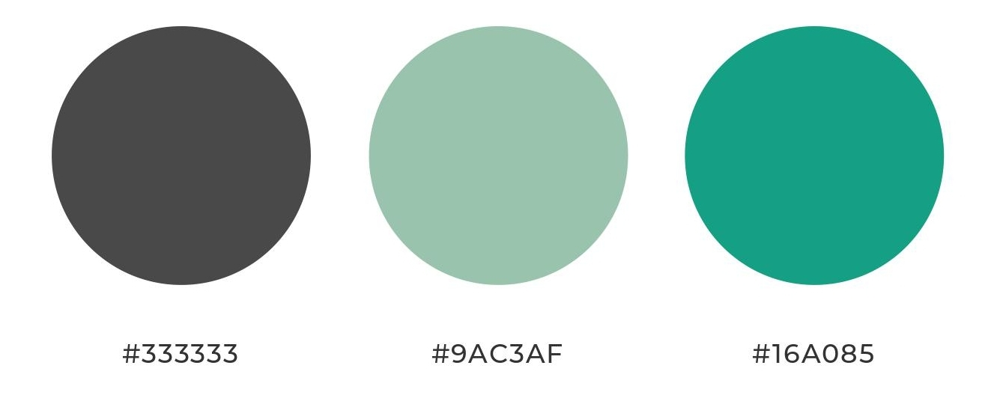
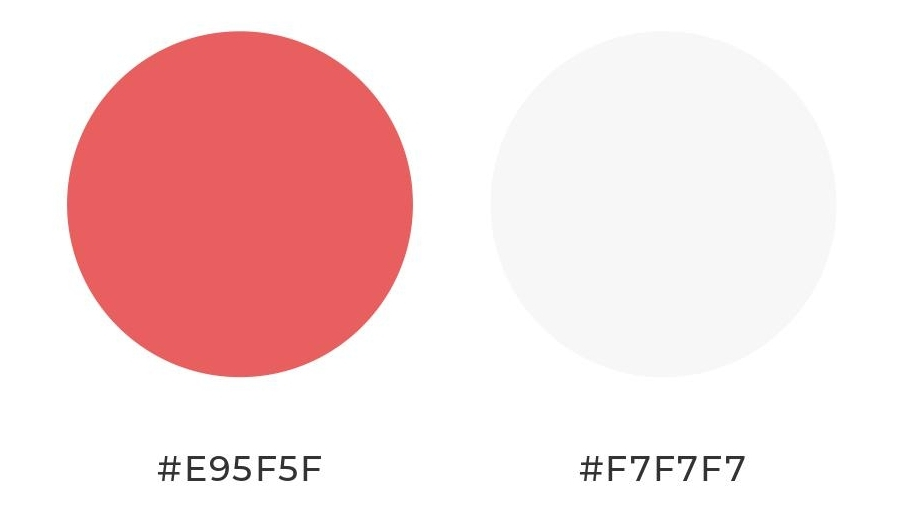
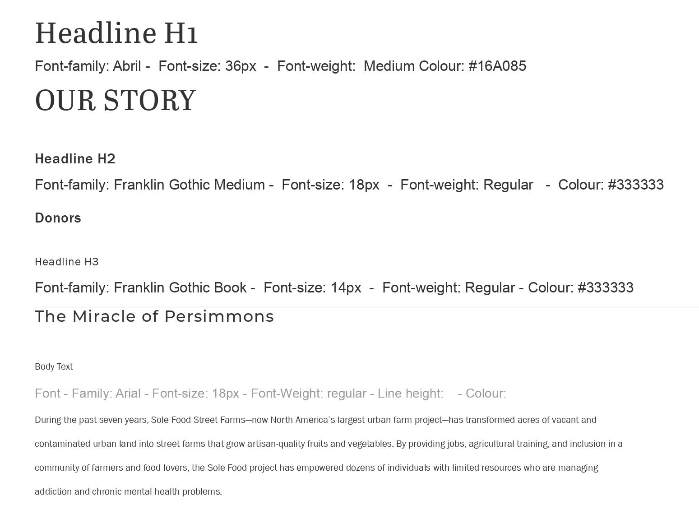
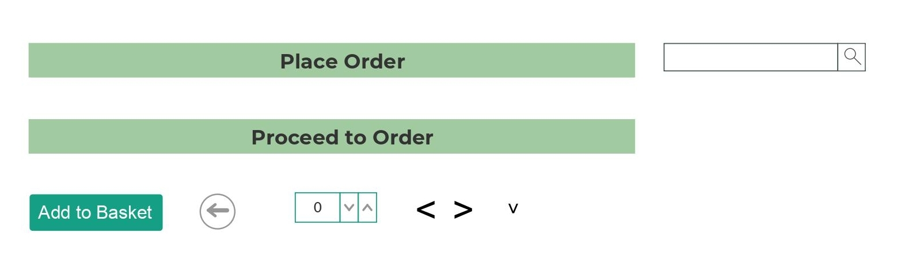

Overview
As part of a UX program at UCI, a team of three classmates: Van Le, Julia Kang and Matt Janke was assigned to create a UX/UI redesign for a non-profit. The team selected Sole Food Street Farms, a non-profit dedicated to empowering individuals with limited resources through job opportunities, agricultural training, and community support. The assignment was completed in two weeks and aimed to improve the organization’s user experience and design.
The challenge
Sole Food Street Farms transforms vacant and contaminated land into street farms that grow artisanal fruits and vegetables while providing job training for people in need. The team identified issues with the current service, such as unclear navigation and misinterpretation of the produce list, leading to confusion for customers and restaurants. To improve the service, the team aims to create a clearer way for customers and restaurants to view the quality and quantity of their products, such as clearly labeling the produce list and listing prices. The goal is to make the purchasing process easier and more accessible for businesses.
Expected outcome
Sole Food Street Farms generates revenue by selling their produce to local restaurants. To increase their services to restaurants, the team aims to create a more accessible and easier way for vendors to view the quality and quantity of their products through a direct link to a weekly produce list on the homepage. To further simplify the process for restaurant owners, the team created a tablet prototype that integrates with Square, reducing the amount of technology needed for billing customers.
User persona
The persona of the project is Josh, the owner of Vibe Organics, a local organic restaurant. Through interviews between Josh and Julia, it was found that Josh has difficulties in efficiently communicating with his local produce vendors, leading to inefficiencies in the ordering process. This lack of an organized and fast ordering system could result in him having to rely solely on wholesale vendors, potentially hurting the local vendors he wants to support.

User flowchart
I created a user flow chart to visualize and simplify Josh’s journey through the Sole Food website. The chart outlines the steps Josh would take to find and order the produce he needs for his restaurant and highlights any pain points in the current process. By incorporating Josh’s feedback and mapping out his experience, we were able to design a wireframe that addresses his needs and ensures a seamless ordering process for him and other restaurant owners.

Tablet Wireframe
After prioritizing the tablet-friendly design, Matt created wireframes that would make it easy for restaurant owners like Josh to quickly access the weekly produce list, view the prices of each item, and order the produce they need. We aimed to streamline the ordering process and make it as seamless as possible for the restaurant owner, which would in turn increase the business for Sole Food.
Additionally, we created a separate page for the produce list with prices clearly listed to improve transparency and make the purchasing process easier for the vendors. A “Your Cart” page was added for users to see what they have selected and to also be able to edit and confirm their purchase. Lastly, we added a “Contact Us” page for any questions or concerns customers may have.
Overall, our goal was to create a user-friendly, efficient and organized platform for Sole Food’s customers and vendors. Our redesign aims to improve their service and increase rev- enue for the non-profit, while still keeping their mission and values in mind.

Produce list
I was responsible for creating the high-fidelity UI version of Sole Food Street Farms. My focus was on creating a user- friendly platform that was accessible to all, including those with difficulty clicking small buttons. I ensured the design was aesthetically pleasing and aligned with the brand of Sole Food Street Farms. The information was presented in an easily readable and accessible format to improve the service offered to customers and vendors. My goal was to create an efficient and effective platform for Sole Food Street Farms.

Style Guide
I designed a new style guide for Sole Food Street Farms that emphasizes the fresh and organic nature of their produce. This guide outlines the brand’s color palette, typography, imagery, and overall aesthetic to ensure a seamless and visually appealing representation of the company. The goal of this guide is to provide a consistent look and feel across all of Sole Food Street Farms’ materials, making it easier for customers to recognize and connect with the brand.
1. Color Palette
Primary Color Palette

Secondary Color Palette

2. Typography

3. Icons
4. Buttons

5. Grid
-
For desktops: The grid is 123 columns, and is 1200px with a gutter on 12px, and an offset of 16.
-
For tablets: The grid is 12 columns, and is 728px with a gutter on 12px, and an offset of 20.
-
For mobile: The grid is 6 columns, and is 343px with a gutter on 12px, and an offset of 16.
6. Images
Human Photography
- Do: Candid, happy, vibrant, close-up, active working, rule of third, high quality, emotions.
- Don’t: low quality, sad, pixelated, no expression.

Future Development
Due to being constrained by geography, the team could have further improved the application by conducting in-person interviews with Sole Food to gain a better understanding of their business view and requirements. Additionally, prototyping the application and receiving feedback from local restaurant owners could have provided valuable insights for further improvement.
Revised
Our team carried out the project in the late 2017. During my tenure at Dream Incubator, while searching for startups in Vietnam, I stumbled upon a start-up named Kaomero Vietnam founded in June 2018. Kaomero is a procurement and sourcing platform that links local farmers with F&B business owners. They achieved a significant milestone in 2021 by successfully raising $4.6 million in Series A funding. This start-up has a similar business model to the one we envisioned for Sole Food. Our e-commerce platform designed for Sole Food holds great promise and potential.